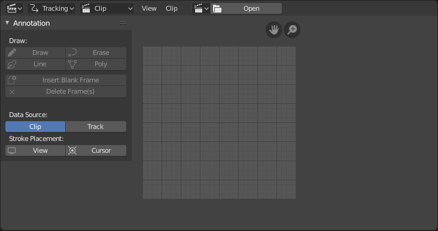
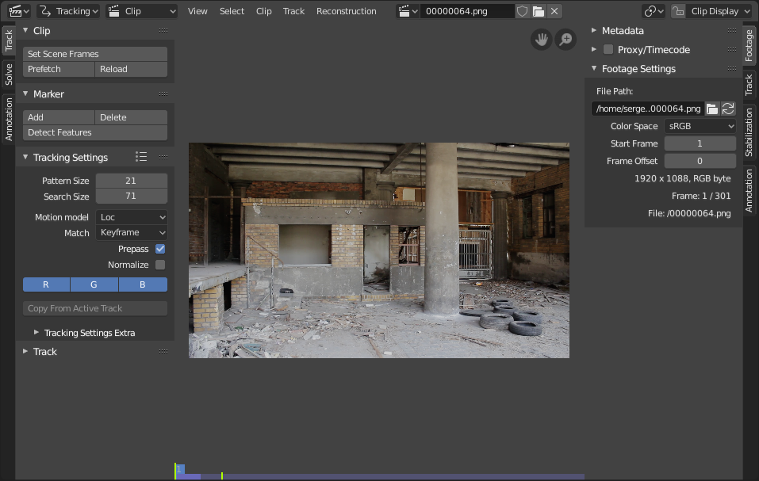

简介¶
影片剪辑编辑器有两个主要用途，它能被用做 追踪 或 遮罩 影片。

影片剪辑编辑器界面。¶
标题¶
控件¶
- 剪辑
用于添加电影文件的 数据块菜单。剪辑编辑器可以使用电影文件和图像序列。将影片剪辑加载到剪辑编辑器时，界面中会多出一个面板。

带有打开剪辑的影片剪辑编辑器。¶
- 模式
- 轴心点
See Pivot Points.
- 剪辑显示
该弹窗包含与编辑器本身相关的显示设置。
- 通道
R、G、B切换控制用于帧预览颜色通道。它是需要的，因为跟踪算法与灰度图像一起工作，并且不总是清楚地看到哪些通道被禁用会增加特征点的对比度并降低噪点。
- 灰度预览 (B/W)
显示整个帧灰度。
- 静音（眼睛图标） M
Shows black frames in the preview instead of the movie clip. It helps to find tracks which are tracked inaccurately or which were not tracked at all.
- 渲染未畸变代理
将 镜头畸变 设置应用于视口图像，以便显示未失真的素材。它只是一个预览选项，它实际上不会更改素材本身。
- 锁定选择 L
在播放或追踪过程中，使编辑器在整个素材的同一屏幕位置显示选定的轨道。此选项有助于控制跟踪过程，并在轨道开始滑落或跳动时停止跟踪过程。
- 显示稳像
该选项使显示的帧受到2D稳定设置的影响（仅在重建模式下可用）。这只是一个预览选项，它并不实际改变镜头本身。
- 网格
显示一个原本为正交的网格，但受到失真模型的影响（仅在失真模式下可用）。此网格可用于手动校准——在屏幕上，扭曲的网格线等于直线。
- 校准
为标注笔画应用失真模型(仅在失真模式下可用)。该选项还有助于执行手动校准。以后将添加该方法的更详细的说明。
- 显示宽高比
更改为仅显示宽高比。它不影响跟踪或解算过程。